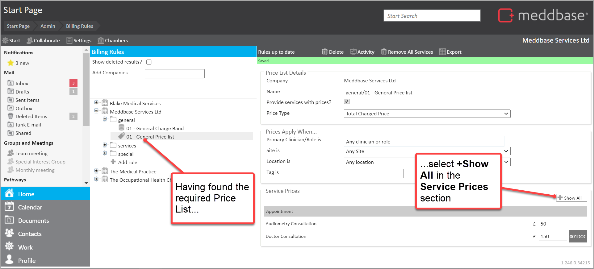
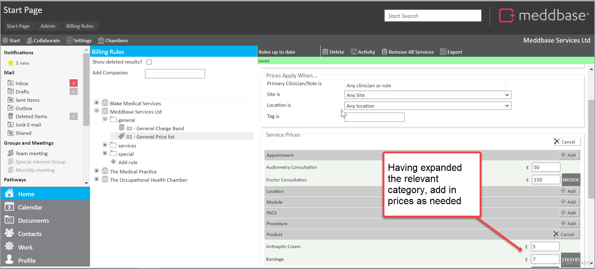
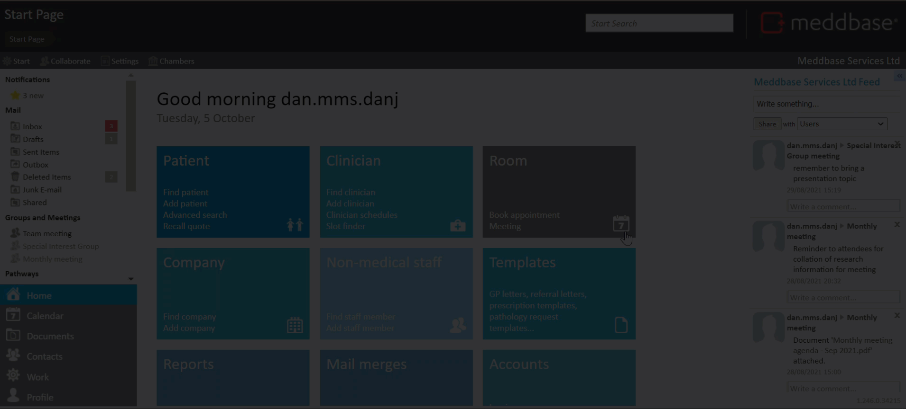

When new services have been created, they won't automatically be available for booking. There is further configuration required in Billing Rules to specify a price for the service and make sure it is provided.
This article:
Adding a new service to an existing price list
To do this:


The list is automatically saved as prices are added.
Want to see how it's done?
The short video below shows you how new services can be added to a Price List.

The above example was a simple walk-through. There are further points to consider which are outlined below.
The example above worked on the principle that the 'Provide services with prices?' box is ticked.
In this scenario, all you need to do is specify the price for your new service. If the box is not ticked, then you need to search or create the Provide Services Rule that enables the service. This feature is explained in the article Using the Provide Services Rule...
Making services available to book online
If you want patients to be able to book the new service through the Patient Portal, or through your own website using our API, the new service must be added to a Patient Self-Book rule that belongs to the same charge band as the price list.
If you are adding a new module, both the module and the appointment type associated with the module must be added to the Patient Self-Book rule.